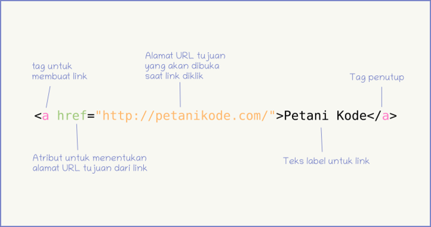
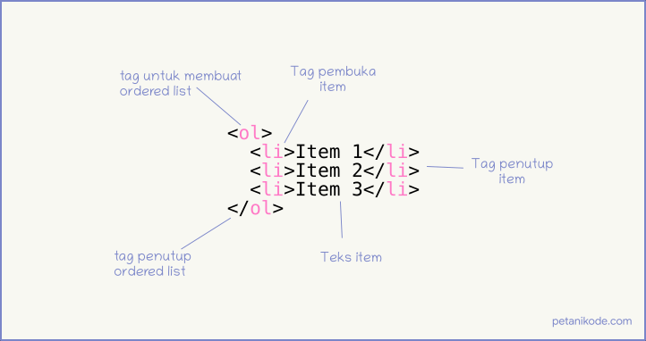
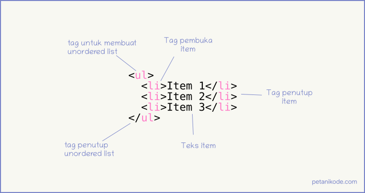
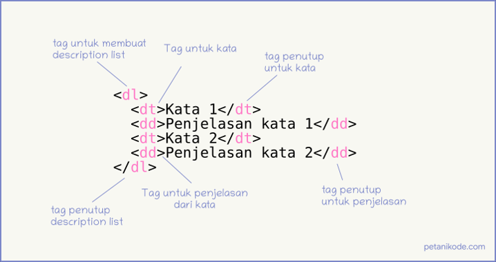

LINK
Link?
Link atau Hyperlink adalah elemen HTML yang berfungsi menghubungkan suatu halaman web ke halaman web yang lain.
Tidak hanya untuk menghubungkan halaman, link juga punya fungsi lain seperti scroll top, download file, menjalankan fungsi javascript, dll.
Cara Membuat Link
Link pada HTML dapat dibuat dengan tag a, kemudian tag ini harus memiliki atribut href untuk menentukan alamat URL tujuan dari link.
Lebih lanjut dapat dilihat di : petanikode.com

Jenis - Jenis Link
Penggunaan selengkapnya tentang internal dan eksternal link liat di materi ppt aja yak. Klik download di pojok kanan atas.
Atribut pada Link
- Target
Atribut ini berfungsi untuk menentukan target dari pembukaan link
- Title
Atribut ini berfungsi untuk membuat tooltips. Tooltips adalah informasi tambahan yang akan tampil saat link disentuh pointer atau saat kita menahan tap di hp.
- Rel
diperlukan menentukan hubungan antara dokumen saat ini dan dokumen / sumber daya yang ditautkan.
- Style
Memberi style pada link (mengubah warna, background, dll).
Fungsi Lainnya Dari Link
- Membuat Link Buntu
- Membuat Link Anchor
- Membuat Link untuk Memanggil Fungsi Javascript
- Membuat Link dengan Gambar
- Membuat Link untuk Download File
- Membuat Link untuk Mengirim Email
LIST
List?
Fungsi dari HTML untuk menampilkan data berurutan.
Ordered List : list yang terurut
Unordered List : list yang tak terurut
Description List : list yang berisi definisi
Ordered List di HTML
Ordered list dibuat dengan tag ol. Lalu di dalamnya diisi dengan item-item yang akan dimasukkan ke dalam list. Item dibuat dengan tag li (list item).

Unordered List di HTML
Unordered list adalah list yang tak terurut yang menggunakan simbol-simbol pada item-nya. Unordered list dibuat dengan tag ul dan untuk item-nya dibuat juga dengan tag li.

Description List di HTML
Description List adalah list yang berisi deksripsi atau penjelasan dari sesuatu.
dl (description list) tag untuk memulai description list;
dt (description term) tag untuk membuat kata yang akan dideskripsikan;
dd (description description) tag untuk membuat penjelasan dari kata.
